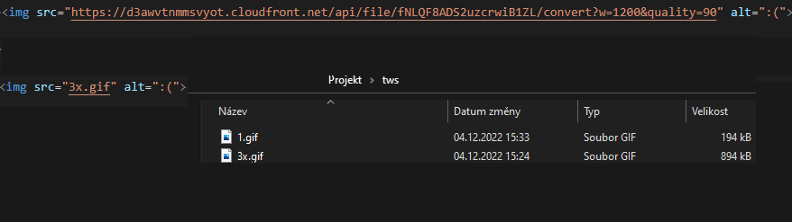
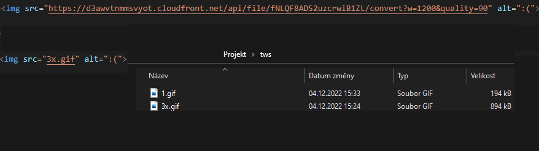

Obrázky můžeme vkládat na stránky použitím <img src="..." alt="...">, kde do src="..." můžeme vložit odkaz na stránku, nebo také tak, že už máme obrázek stáhnutý na počítač.
Do <img src="..."> můžeme dávat třeba i pohybující se obrázky jako GIFy.
Do <alt="..."> můžeme vkládat text, který se objeví, když se obrázek neobjeví.


 
